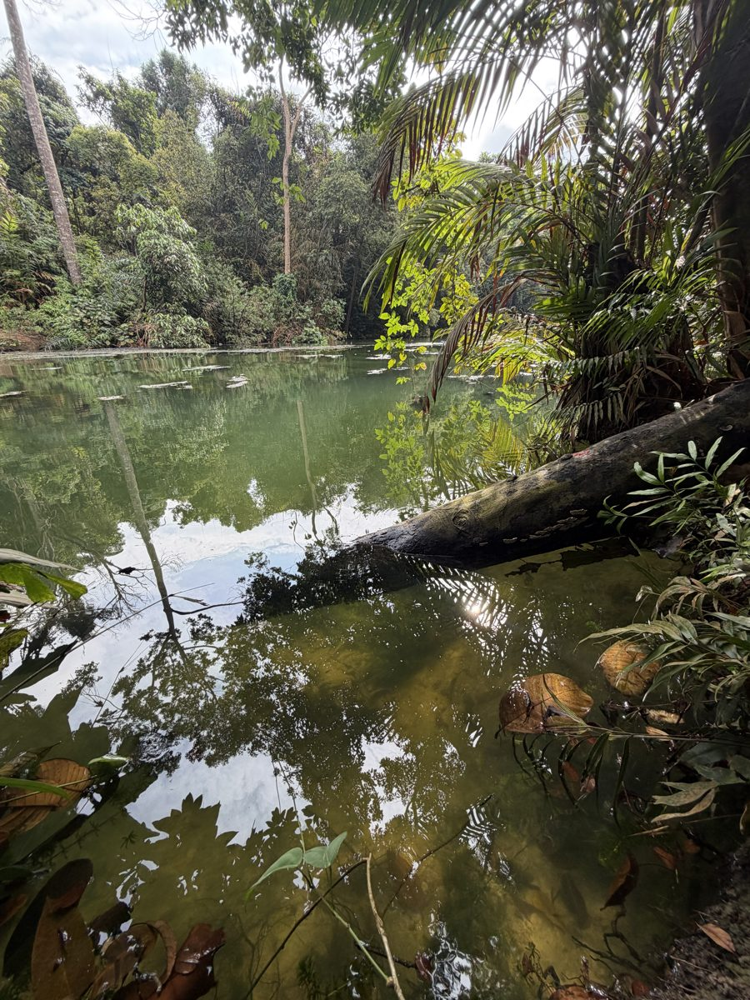
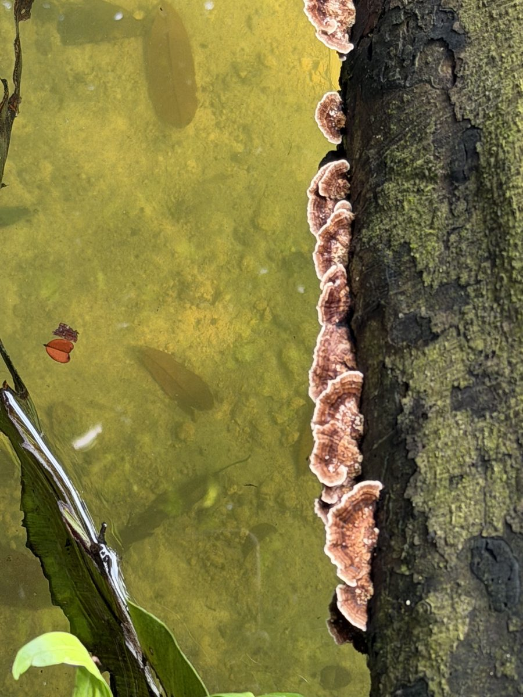
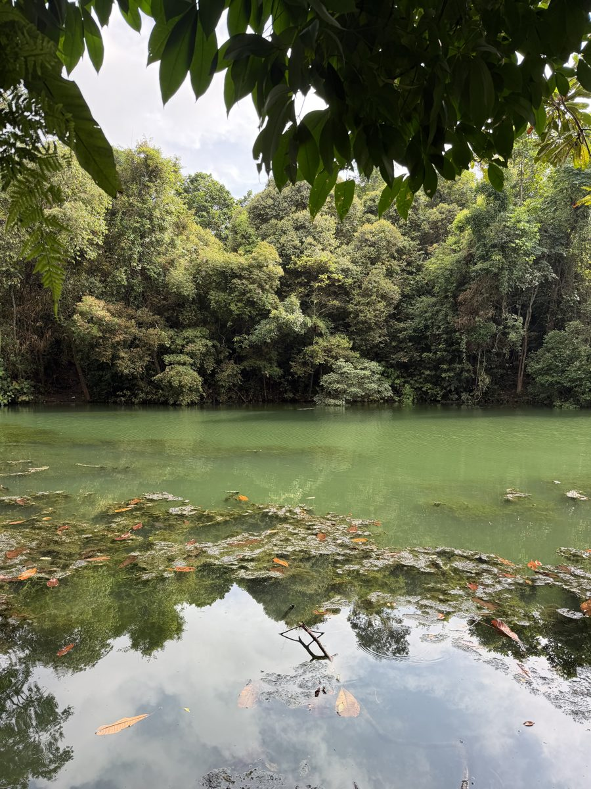
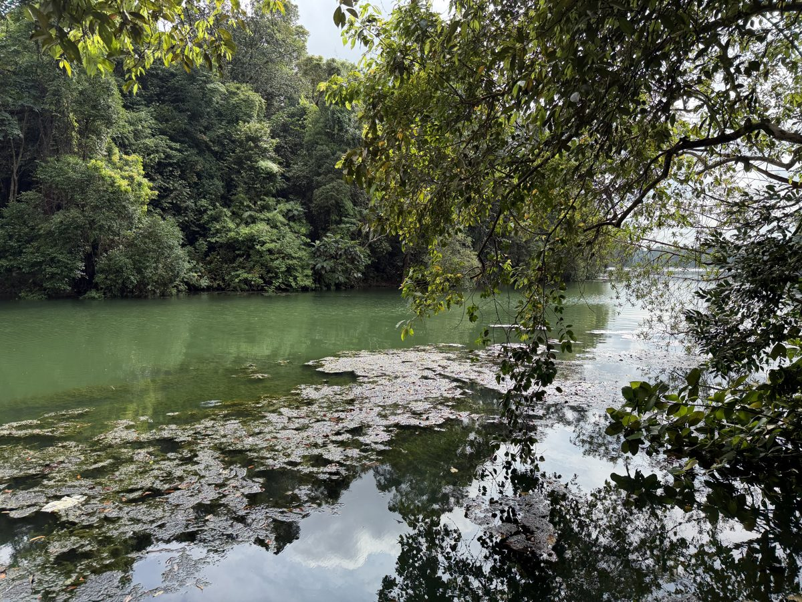
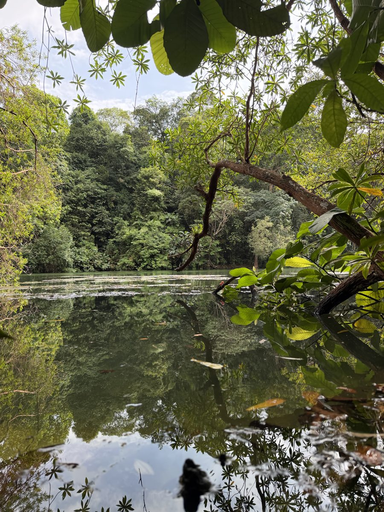
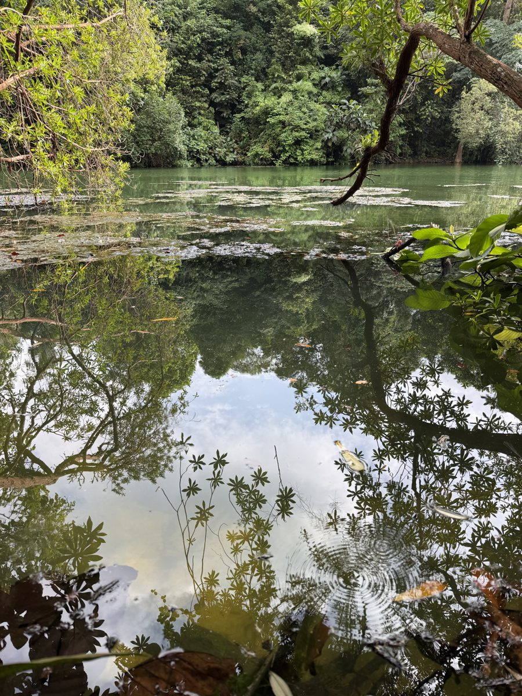
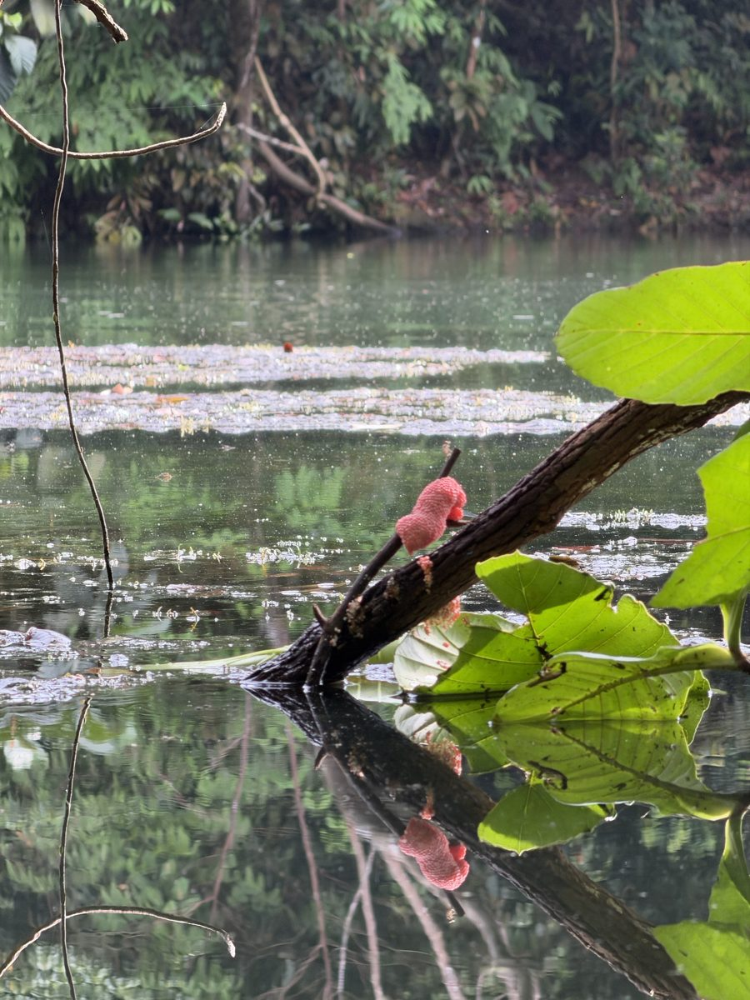
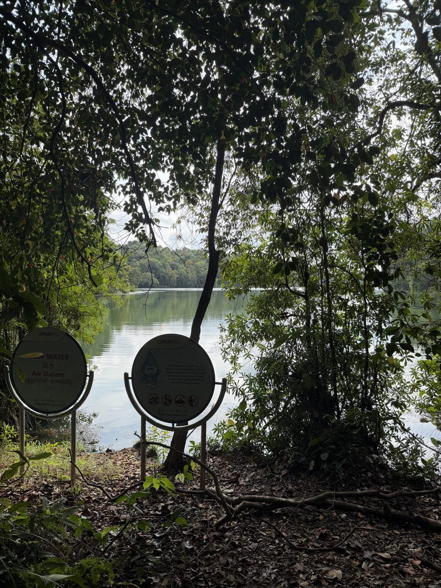
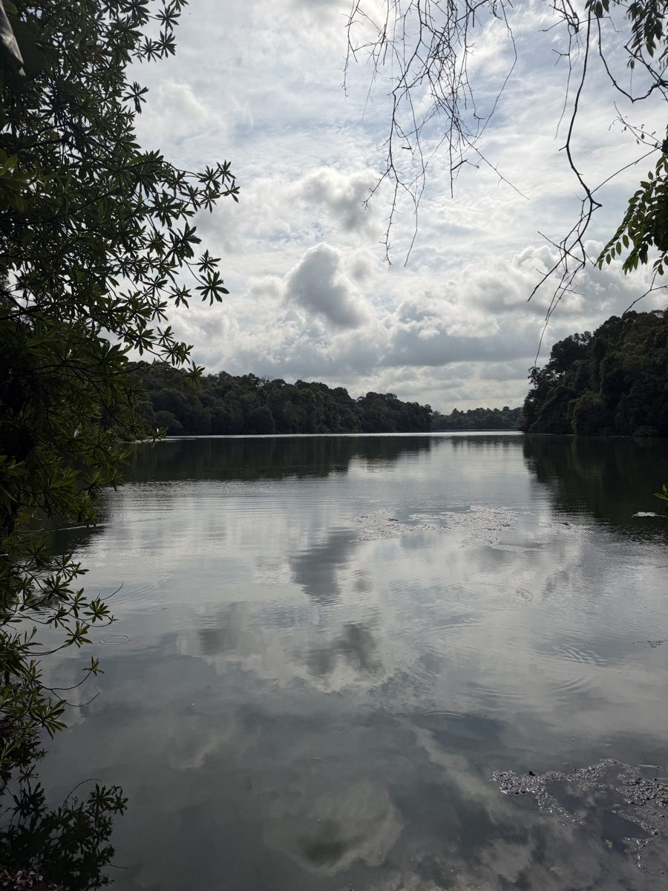
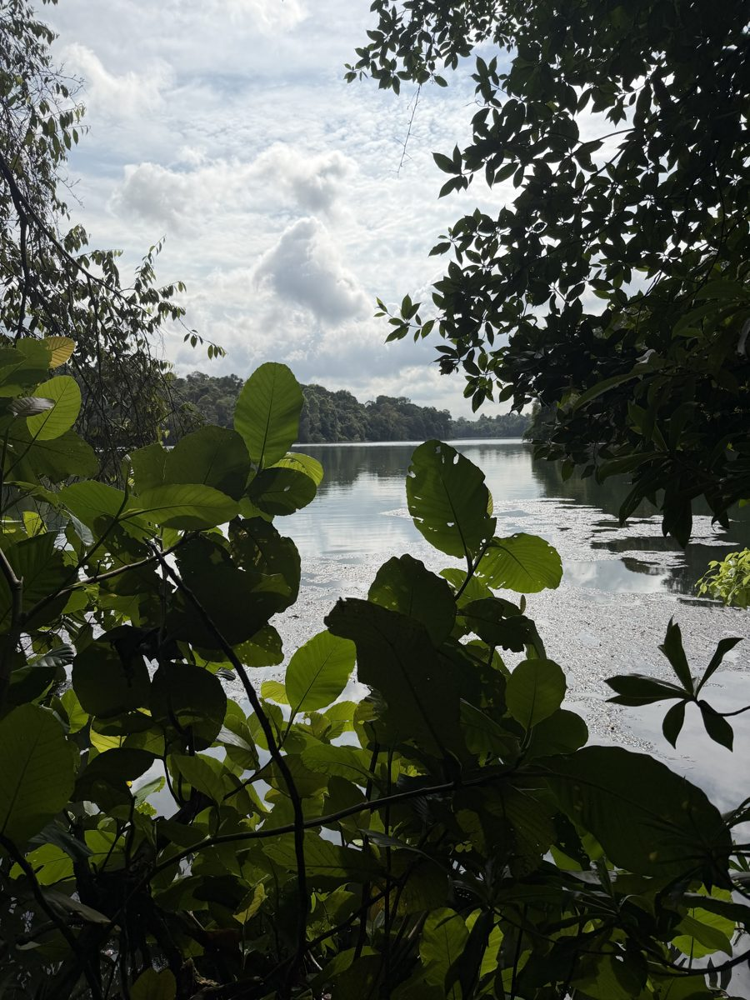

What the Reservoir Showed Me
Fungi, Buds, Lichen — the Forest Floor's Secret Life
At the water · Looking closely
I have learned, over many years of walking in nature, that the reward for slowing down is always greater than the reward for covering ground. Standing at the reservoir's edge with no schedule and nowhere to be, I started looking more carefully. And the more carefully I looked, the more the forest gave me.

Bracket fungi on a half-submerged log — shelf upon shelf of rust and cream, growing at the waterline.

Small pink buds on a branch hanging over the water — something about to bloom.
A fallen log lay half in and half out of the water at the reservoir's edge, and on its exposed side, bracket fungi were growing in perfect shelves — rust-coloured on top, cream underneath, stacked one above the other like the floors of a tiny building. They were extraordinary up close. Completely at home at the waterline, doing exactly what fungi have been doing in places like this for millions of years.

White mushrooms on the forest floor — delicate, precise, completely certain of themselves.

Lichen on old wood — slow, patient, and absolutely magnificent at close range.
Nearby, a branch hung out over the water carrying small pink buds — not quite open yet, waiting for something, perhaps a few more degrees of warmth or the right moment in the morning. I stood underneath them and looked up and thought: this is what the jungle looks like when nobody is watching. Then it occurred to me — it always looks like this. I am the visitor. The buds do not perform for anyone.
On the forest floor nearby, a cluster of white mushrooms had pushed up through the leaf litter — bright, clean, almost impossibly tidy against the dark soil. And on the old logs further in, great patches of lichen spread in grey-green blooms, soft and dry to the touch, looking from a distance like something painted on. Up close they are one of the most complex living things in a forest, and one of the most overlooked. I am trying to overlook less.






More from the water's edge — moments worth slowing down for.